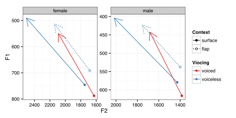
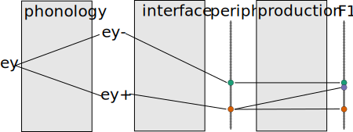
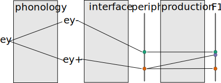

Terminological Issues

Welcome to my Dissertation Defense 2.0 1.1
I'll be making the case that the conventional wisdom surrounding the transition of phenomena from phonetic to phonological is not that well supported by studying language change in progress.
I'll argue that phonological reanalysis occurs at the onset of sound changes, not as late stage reanlyses.
In the process I'll also be trying to make the case that the difference between "phonetic" and "phonological" is not just a matter of degree, but of quality.
Phonologization is the reanalysis of an "intrinsic" phonetic property (universal, physiological, etc.) as an "extrinsic" phonetic property (language specific, under speaker control).
After phonologization comes phonemicization.
Phonologization is the reanalyzis of an "intrinsic" phonetic property as an "extrinsic" phonetic property.
After phonologization comes stablization, where the extrinsic phonetic property becomes categorical.
Phonologization is the reanalysis of phonological allophones (categorically conditioned) as phonemes or quasiphonemes.
Phonologization is the introduction of a new phonological process into the grammar.


Much of the time spent on measurement consists of locating the words of interest and storing these segments. More than one member of our research staff has projected a program for automatic location, segmentation, and measurement of vowel nuclei, but so far, all such attempts have led to an increase in gross error rates of several orders of magnitude. At present, we find there is no effective substitute for the careful examination and measurement of the formant trajectories of each individual vowel token by an analyst relying on both auditory and visual information, double-checking the computer’s analysis against auditory impressions.
Labov, Ash & Boberg (2006)

When we observe a language change in progress, the change is taking place in speakers' knowledge of their language from generation to generation.
To know which aspect of their knowledge is changing, we really need to observe the sound change in progress.
In all three cases, the outcome is the same, but result from changes to three very different aspects of linguistic knowledge.
Tucker (1944) on the Philadelphia dialect (emphasis mine).
Both the [aɪ]-type diphthong and the [aʊ]-type diphthong exist in only one quality, whereas in most American dialects the first element is shortened and modified in quality before a voiceless consonant [...] No such distinction is made in the Philadelphia dialect.
Today:
'Raymond', who was interviewed in 2010, was 19 (DOB 1981).
| "I grew up here my whole life." |
| "Um, right now I'm undecided." |
| "life" |
| "undecided." |
It looks like between Tucker's description, and Raymond's birth, there was a phonological innovation in Philadelphia.
| /ay/ |
- high + low + back - round … |
| /ay/ |
- high - low + back - round … |
It looks like /ay/ rose continuously across the 20th century.
There isn't any point in time where there is an obvious discontinuity, either across the community or within speakers, where there was a transition from a phonetic change to a phonological one.
Is there any meaningful distinction to be made between a phonetic change and a phonological one?

Ohala (1981)
Regular articulatory and perceptual biases will lead to gradual phonetic shift, and perhaps later stage phonological or phonemic reanalysis.
In comparing these two phonetic changes, we can see that phonologization is not the deterministic outcome of a reliable and large phonetic phenomenon.
This result is even more striking when looking at the phonetic precursors of /ay/ alone
The model of gradual reanalysis would predict that phonetic changes should progress from the most favoring environment to the least.
In some cases, there is a mismatch between contexts which phonetically favor a change, and the eventual phonological conditioning in its outcome.

(Joos, 1942; Chambers, 1973; Moreton & Thomas, 2007)
Faithful /d/ (235 ms) > Flapped /d/ (156 ms); Faithful /t/ (143 ms); Flapped /t/ (113 ms)

Data from Rosenfelder (2005)
Depending on what the phonetic precursor is, we'd expect to see one of these two patterns of sound change initiation and reanalysis.
It looks like /ay/ raising differentiates along phonological, not phonetic dimensions.

I constructed a statistical model defining these relationships between /ay/ in these different contexts, utilizing b-splines (a non-linear curve fitting method) to model the effects over date of birth. Also included were random intercepts for speaker and for word.
The model was implemented in Stan, which used Hamiltonion Monte Carlo to estimate the effects. All priors were non-informative
Question: When, across the time course of the change, is /ay/ raising conditioned by phonological voicing?
Answer: At the very onset of the change.
/ay/ differentiates between pre-/t/ and pre-/d/ contexts in the exact same way whether the /t/ and /d/ are faithful, or flapped.
Most of the /ay/ followed by flapped /t/ were from morphologically complex words (e.g writer)
Maybe the immediate participation of these contexts in /ay/ raising was analogy with the morphologically simplex forms (write).
Well, the analogy appears to have immediately spread to all of the relevant cases all at once.
lmer(Diag ~ Decade*FolSeg + (FolSeg | Speaker) + (1|Word))
Decade is date of birth minus 1900 divided by 10.
| C Estimates | Interactions | |||||
| Intercept | 0.67 | t = 17.02 | -0.59 | t = -4.83 | FolSeg = V | |
| 0.28 | t = 2.53 | FolSeg = /l/ | ||||
| Decade | 0.12 | t = 15.56 | -0.12 | t = -6.35 | FolSeg = V × Decade | |
| -0.08 | t = -4.12 | FolSeg = /l/ × Decade |
Phonetic favoribility is a weak predictor of which variants will undergo a change.
First is not fastest.
Phonological conditioning is present at the onset of these changes.
The conventional wisdom regarding the gradual phonological reanalysis of phonetic effects:
How do we resolve the the apparently early phonological differentiation with the gradual phonetic change?


How do we resolve the the apparently early phonological differentiation with the gradual phonetic change?

How do we resolve the the apparently early phonological differentiation with the gradual phonetic change?
 

I have observed that when there is clear phonological conditioning of a sound change towards its end, that phonological conditioning is also in place at the sound change's onset.
New phonological processes enter the grammar as strictly phonological innovations, not reanalyses of phonetic processes, and have relatively small phonetic correlates at first. This is similar to the "Big Bang" theory of Joseph & Janda.
These phonological processes must have been present in the grammar either before or at the onset of the phonetic changes.
There are plenty of examples children briefly entertaining phonological hypotheses which are markedly absent from the adult grammar, like Consonant Harmony.
| Word | Ahmal |
| duck | g̊ʌk |
| kiss | g̊ik |
| stop | d̥ɔp ~b̥ɔp |
(Smith (1973), quoted in Goad (1997))
Learning, both linguistic and social, could iron out a lot of idiosyncratic variation.
How do we know we aren't?

Mielke, Baker, Archangeli (forthcoming)
Bill Labov, Gene Buckley, Charles Yang, Ricardo Bermúz-Otero.
Audiences at NAPhC, the mfm, NELS, NWAV
Especially denizens of the Linguistics lab.